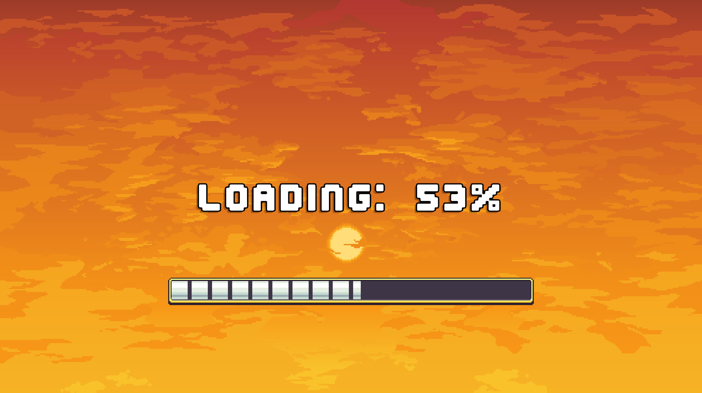
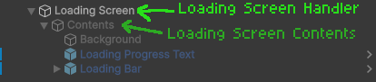
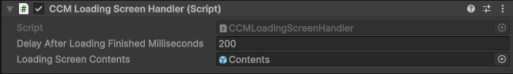

Loading Screens
When a Character Creation Menu is first opened it can take time before the menu is ready as it needs to load all layer options first.
A loading screen can be used to hide the Character Creation Menu while it loads and give the player something to look at until the menu is ready.

How It Works
Just like the Character Creation Menu itself, loading screens are also modular. Pieces can be added or removed to create your own loading screen.
The Hierarchy is as follows:
First GameObject manages the loading screen and holds the CCMLoadingScreenHandler component. This GameObject should be kept enabled.
Second GameObject holds the actual contents of the loading screen. This is the GameObject the Loading Screen Handler enables and disables. This GameObject can be kept enabled or disabled, it's state in the editor doesn't matter since it will be controlled by the Loading Screen Handler.
The Contents GameObject will hold the loading screen background and any additional pieces of the loading screen such as a progress bar/text or loading icon.

Loading Screen Handler Component
The CCMLoadingScreenHandler component is responsible for toggling the state of a loading screen.
When enabled, the Loading Screen Handler automatically enabled the loading screen and listens for when the Character Creation Menu finishes loading. Once finished, it disables the loading screen.
The component has two fields:
| Field | Description |
|---|---|
| Delay After Loading Finished | The time in milliseconds to wait before disabling the menu after loading has finished |
| Loading Screen Contents | The parent GameObject containing the actual contents of the loading screen |

Prefabs
Loading Screen prefabs are available to easily drop into your own project.
These prefabs are located under Pefabs > Character Creator > Modules > Loading Screen.
Core Prefab
Contained within the Core Subfolder.
A loading screen in its most basic state. Only a background to display during the loading process.
This prefab can be added to using the Additions prefabs.
Pre-Setup Prefabs
Contained within the Pre-Setup subfolder.
Complete Loading Screens with other features included. These are drag and drop solutions.
Any of the Pre-Setup Loading Screen prefabs can be included in any Character Creation Menu without any other setup required.
[INCLUDE IMAGE HERE]
Additions Prefabs
Contained within the Additions Subfolder.
Additional prefabs that can be added to the Core loading screen prefab.
These prefabs include the following:
- Loading Bar - A progress bar that fills as the Character Creation Menu loads.
- Loading Icon - An animated icon that spins repeately.
- Loading Progress Text - Text which displays the percentage the Character Creation Menu has loaded from 0%-100%
- Loading Repeating Text - Text which cycles through a list of preset sentences at a set interval.
[INCLUDE COMPILATION IMAGE HERE]
Loading Screen Components
Note
All loading screen components require a reference to the Loading Screen handler.
These components can be added to a loading screen to add additional features.
They're also used in the Additions Prefabs. If you're looking for a simple drag and drop implementation, use those instead.
LoadingScreenProgressText Component
- Adds progress text indicating how far loading has progressed.
- Requires a
TMP Textcomponent reference. Loading Stringcan be modified to change the loading bar text. {0} will be replaced with the loading percentage.Smoothing Speedvalue can be changed to modify lerp speed through loading progress.
LoadingScreenProgressBar Component
- Adds a progress bar which fills up as the loading progresses.
- Requires an
imagecomponent reference - The
imagecomponentsImage Typeshould be set to filled. TheFill Amountcan then be modifed automatically to fill up the progress bar. Smoothing Speedvalue can be changed to modify loading bar lerp speed through loading progress.
LoadingScreenRepeatingText Component
- Adds text which cylces through a list of pre-set strings.
- Requires a
TMP Textcomponent reference. - A list of strings containing the repeating text must be set.
- Repeating text cycle duration can be modified (Default = 0.5 seconds).